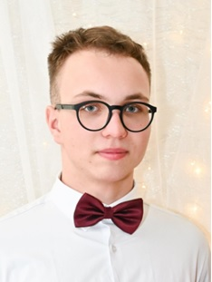

Cześć, jestem Bartek! Od czerwca 2022r. regularnie programuję w javie.
Odkąd pierwszy raz miałem do czynienia z komputerem wiedziałem, że
chce wiązać z nim przyszłość. Chciałbym pierwszy raz zetknąć się z
profesjonalnymi zadaniami, aby zdobyć doświadczenie i się rozwinąć.
Twarde kompetencje:
- Java na poziomie średniozaawansowanym
- Spring boot na poziomie średniozaawansowanym
- postgreSQL i SQL
- Git i Github
- HTML i CSS na poziomie podstawowym
- Angielski na poziomie B2
Miękkie kompetencje:
- Odpowiedzialność
- Elastyczność
- Obowiązkowość
- Pomysłowość
- Pracowitość
2
3